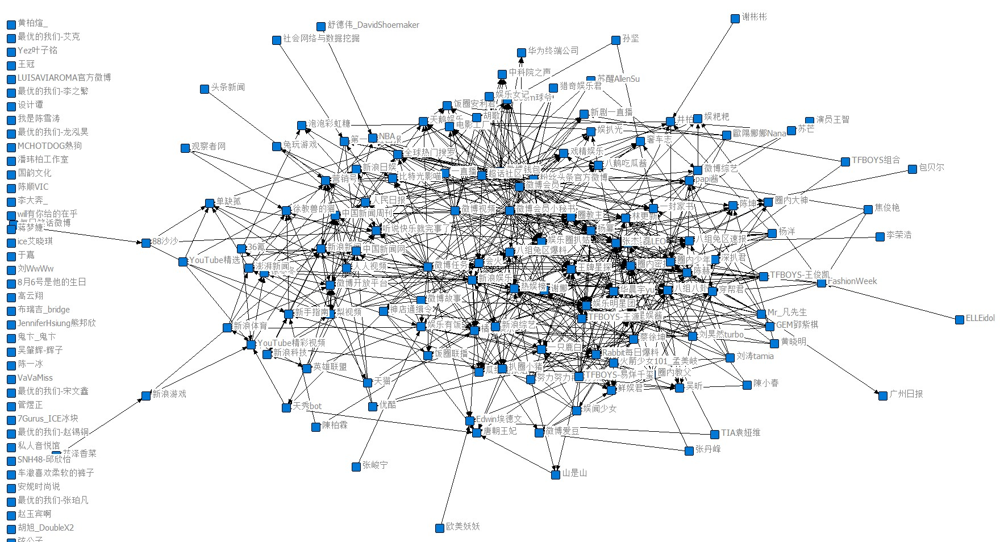
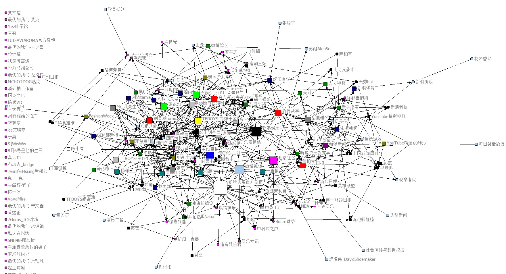
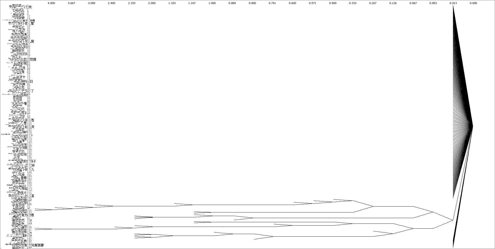

娱乐最前沿1014
娱乐最前沿1014
用户网络拓扑
186个博主的关系网络拓扑, Tool： UCIENT、NetDraw

抽样：对微博的巨大网络进行抽样，选择4月份微博每天微博热搜top5的影响力（依照博文的转发量和评论量）最大的博主进行关注。
度中心性分析

Degree Centrality
度中心性是衡量整个网络中心化程度的重要指标，在网络群体中处于中心位置更易获得资源和信息，拥有更大的权利和影响力。
从图中我们可以看到：粉丝头条官方微博、新浪娱乐、微博视频、超话社区在整个互动网路中更有影响力。
紧密度中心性分析
介数中心性分析
团分析

Cliques
Cliques是指在该子图中任何两点之间都存在一条直线相连的先，并且该派系不能被网络中的其他派系所包含，
是网络中的最大完备子图。
k-clique：任两个节点间的最短路径的最大值<=k 共生成18个团，整体网络的关联度还是比较强的。